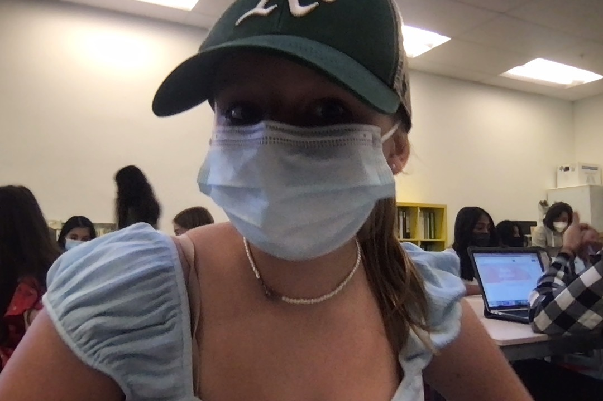
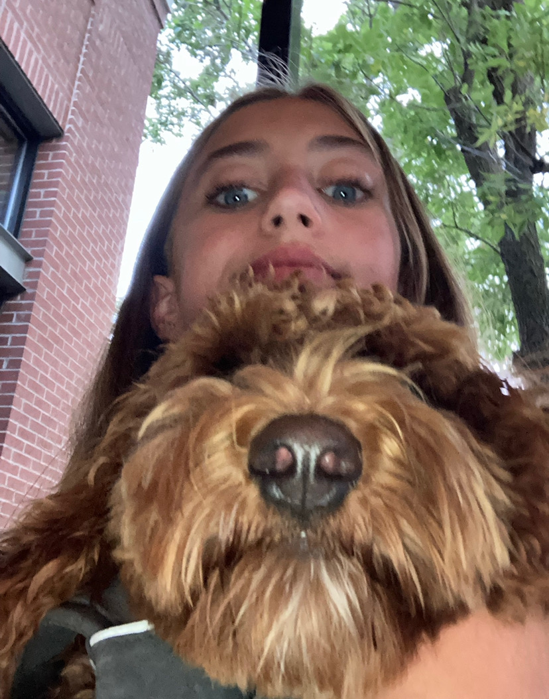
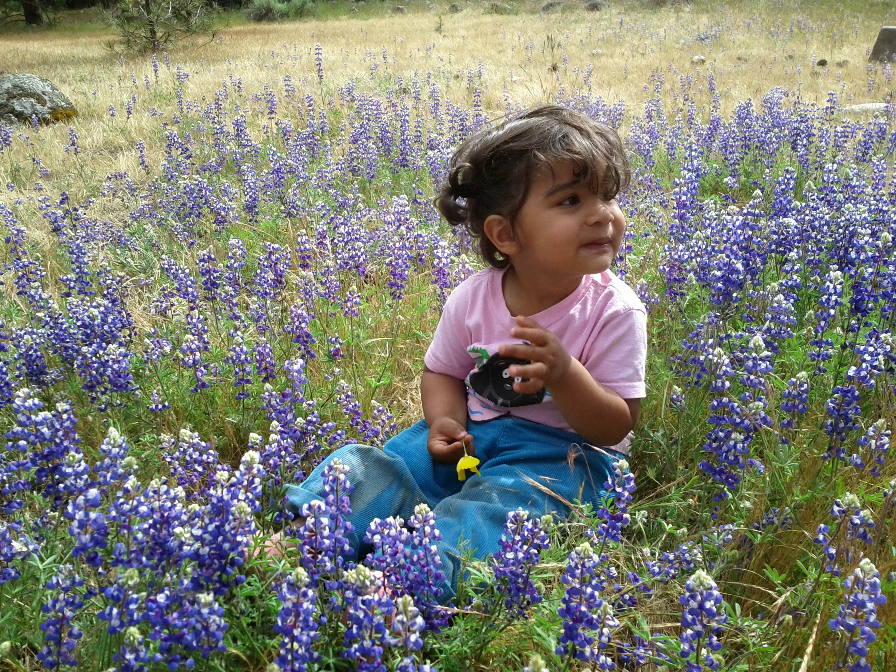
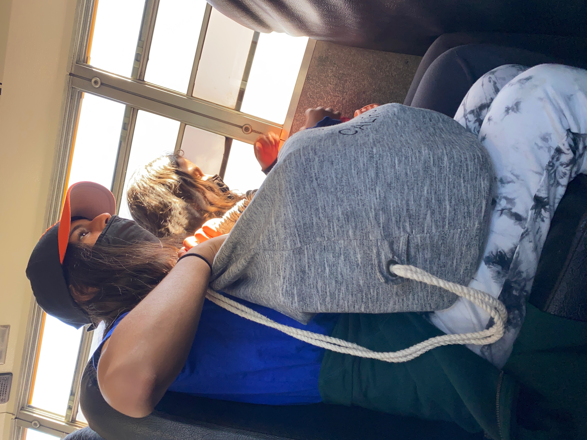
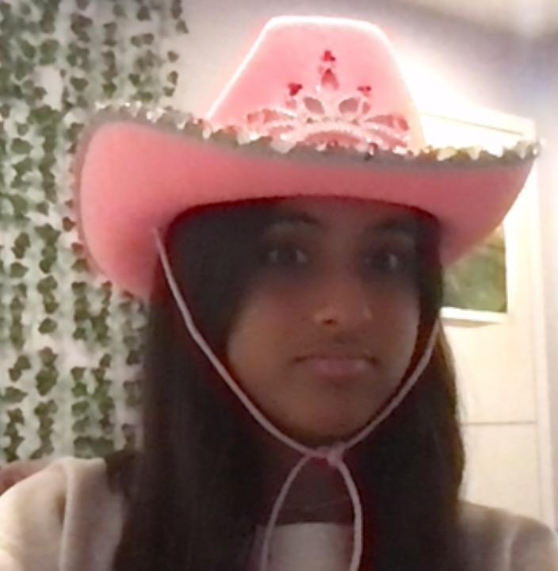
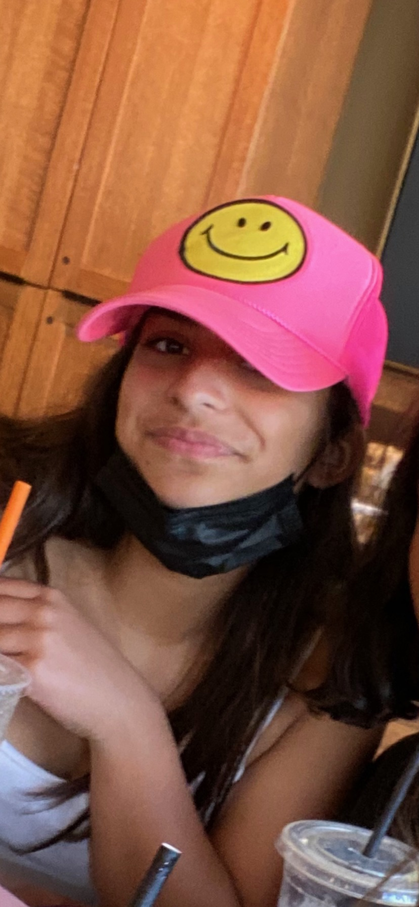

Here we used some of our bussin models to show off how cool caps look! Click one of their faces to see more!
 

as you can see, hats made them look so much better (not saying they look bad) and spice up their look! (the photos below are not links)
  